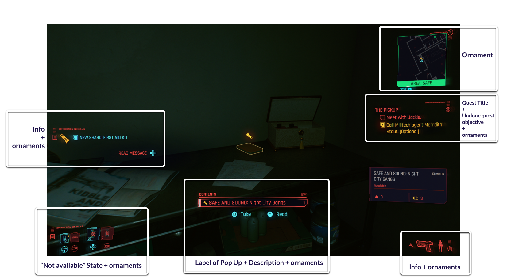
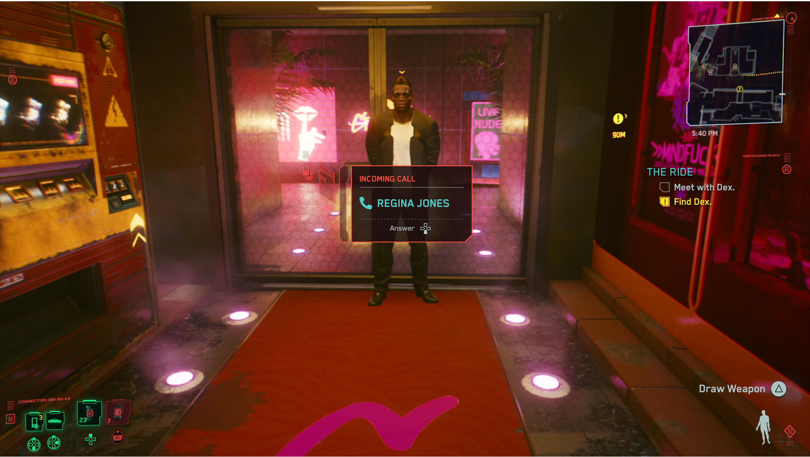
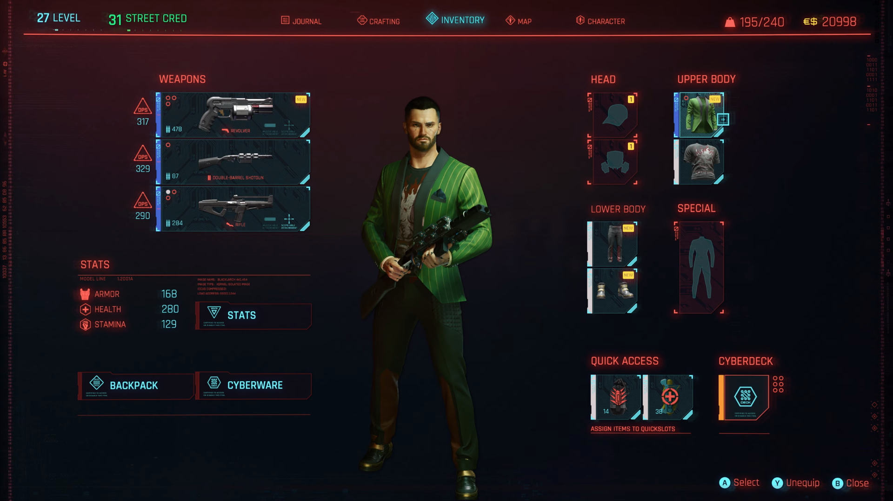
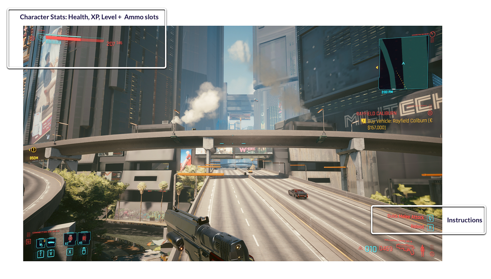
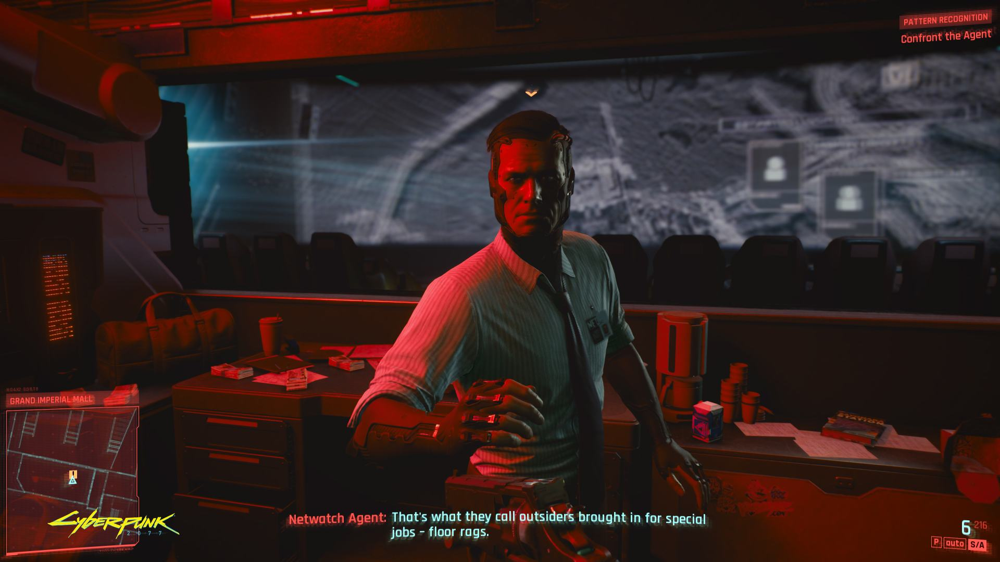

Clawmachine-fit: A. Use-the-HUD-not-the-chrome discipline. Cyan/yellow/red typographic alerts + glitchy corpo overlays. We already have retro-cyberpunk-2077-theme plugin — this is the live-game reference.




